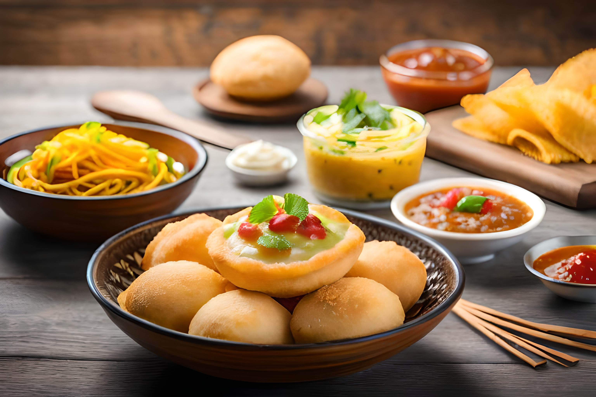
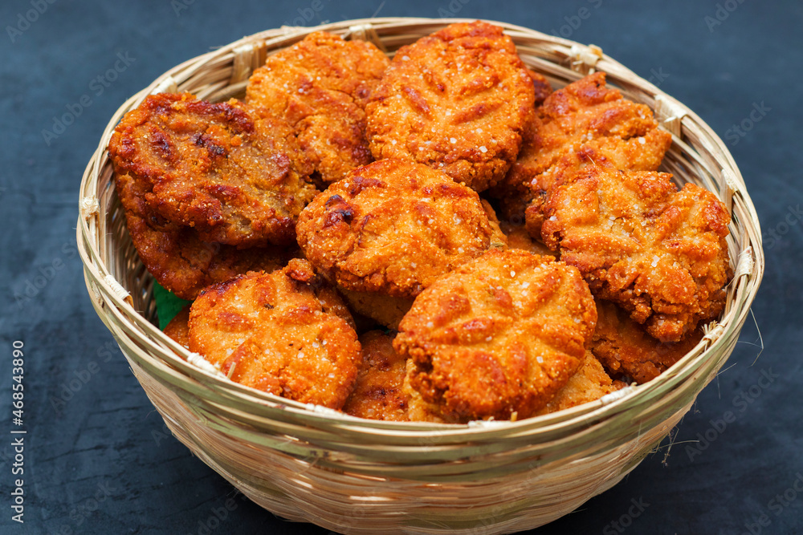

Famous Foods of Bihar
Litti Chokha

Litti Chokha Recipe:
- Ingredients:
- 2 cups wheat flour
- 1 cup sattu (roasted gram flour)
- 1 onion, chopped
- 1 tablespoon mustard oil
- Spices (ajwain, kalonji, etc.)
- Salt to taste
- Instructions:
- Mix the wheat flour with water and knead into a dough.
- Mix sattu with spices, onions, and mustard oil for stuffing.
- Make small balls of dough, stuff with sattu mix, and shape into littis.
- Bake the littis in a tandoor or on a grill until golden brown.
- Serve hot with chokha made of mashed vegetables.
Sattu Paratha

Sattu Paratha Recipe:
- Ingredients:
- 2 cups wheat flour
- 1 cup sattu
- 1 onion, finely chopped
- 2 green chilies, chopped
- Salt and spices as needed
- Instructions:
- Knead the wheat flour with water to form dough.
- Prepare a stuffing mix with sattu, onions, chilies, and spices.
- Divide the dough into balls, stuff with the sattu mix, and roll into parathas.
- Cook the parathas on a hot tawa with ghee until golden brown.
- Serve with pickles and yogurt.
Thekua

Thekua Recipe:
- Ingredients:
- 1 cup wheat flour
- 1/2 cup jaggery
- 2 tablespoons grated coconut
- 1 tablespoon ghee
- Cardamom powder
- Instructions:
- Mix wheat flour, jaggery, coconut, ghee, and cardamom powder.
- Form a dough by adding water as needed.
- Shape into small discs and deep fry until golden brown.
- Cool and store in an airtight container.
- Serve as a snack with tea or coffee.